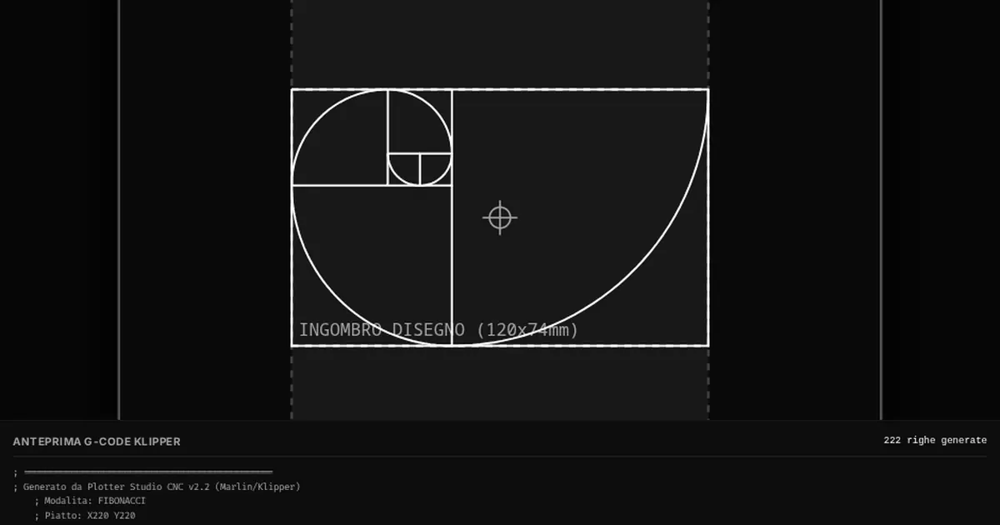

Orfini Math Lab · scheda dell'attività
Studio Plotter CNC
Generatore ed elaboratore G-Code avanzato per pen plotter e CNC, con algoritmi generativi e simulatore 3D.

Temi
- Algoritmi
- Arte generativa
- Attrattori
- Cnc
- Frattali
- G-code
- L-system
- Manifattura digitale
Competenze (Riforma 2017)
- CIT_4 Competenza digitale
- CIT_7 Spirito di iniziativa e imprenditorialità
- IND_C1 Modellazione algoritmica e parametrica per la manifattura digitale
- IND_C2 Sviluppo di simulazioni interattive e visualizzazioni STEM
- IND_C3 Progettazione e gestione dei flussi di fabbricazione 3D
- MAT_C4 Utilizzare concetti e modelli geometrici per interpretare la realtà e gestire configurazioni spaziali
Mettiti alla prova su carta
Nell'Archivio delle verifiche:
- Verifica di maggio 2026: Proprietà delle potenze, Frazioni e percentuali, Proporzioni in elettrotecnica…
Per prepararti alla verifica
- Questa attività non è un argomento di verifica, ma allena due cose che servono sempre: le coordinate e la scala.
- Guarda l'anteprima del G-code e cerca le righe con
XeY: prova a dire dove si trova la penna. - Attenzione: in una scala tutte le misure si moltiplicano per lo stesso numero, anche le coordinate.
Prova tu. Un disegno largo $50$ unità deve diventare largo $120$ mm. Qual è il fattore di scala? Dove finisce un punto che stava a $x = 10$?
Appunti
Soluzione. $120 : 50 = 2{,}4$. Il punto va a $10 \\cdot 2{,}4 = 24$ mm.